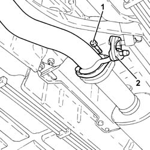
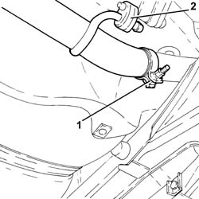
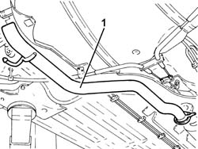

1076B18 rigid section of exhaust pipe between catalytic converter and silencer - r + r
- Path
- Procedures > 10 ENGINE > 1076 EXHAUST PIPES AND SILENCERS > 1076B exhaust pipes and silencers > 1076B18 rigid section of exhaust pipe between catalytic converter and silencer - r + r
- Kind
- repair procedure (removal / refitting; the operation number is the code)
- Applies to
- engines: 1.9 JTD 16V; all production periods
- Interactive page
- https://sloeber94.github.io/elrnDB-a147/en/#/3025091
Applies to: engines: 1.9 JTD 16V; all production periods
 Removing
Removing
 Refitting
RefittingPosition the vehicle on the ramp.
1. Undo the bolts securing the rigid exhaust pipe section between the catalytic converter and silencer, catalytic converter side.
2. Release the rigid pipe for the exhaust pipe between the catalytic converter and the silencer from the front flexible mounting.

Applies to: engines: 1.9 JTD 16V; all production periods
1. Loosen the collar fastening the rigid exhaust pipe section between the catalytic converter and silencer, rear silencer side.
2. Release the rigid pipe for the exhaust pipe between the catalytic converter and the silencer from the rear flexible mounting.

Applies to: engines: 1.9 JTD 16V; all production periods
1. Remove the rigid exhaust pipe section between catalytic converter and silencer, releasing it from the rear exhaust silencer.

Applies to: engines: 1.9 JTD 16V; all production periods
Refitting
RemovingRefit the rigid exhaust pipe section between the catalytic converter and the silencer and connect it to the rear exhaust silencer.
Connect the rigid exhaust pipe section between the catalytic converter and the silencer to the flexible mountings.
Tighten the collar fastening the rigid section of the exhaust pipe between the catalytic converter and the silencer, rear silencer side.
Tighten the bolts securing the rigid exhaust pipe section between catalytic converter and silencer, catalytic converter side to the specified torque.
 | Fastening | Component | Ø | Value (daNm) |
|---|---|---|---|---|
- | Bolt | CATALYTIC CONVERTER (ONE) | M8 | (Rigid pipe side) 2.3 ÷ 2.8 |
Remove the car from the ramps.